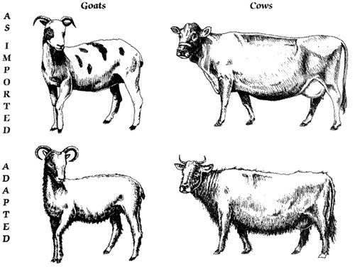
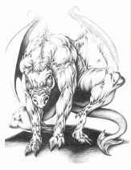

Creature Database
Mammals:
Draftbeast - Genetically Engineered descendants of the Shire Draft horse. Big heavy beasts with mild temperments.
Runnerbeast - The descendant of the Terran horse. Used as transportation and as pack animals mostly. Also raised for racing, herding and pulling a plow. Descended from horses, the Pernese Runnerbeast is as diverse in its breeding as its forefathers, ranging from fast sprinters to sturdy draft beasts used to haul trader wagons. They were used by the Runner Craft to carry messages from holders who did not have easy access to Drumheights or Weyrs.
Draybeast - Descendants of the Terran donkey. Another catch all term for any beast that us used to pull a cart or other form of serious labor. Draybeast covers Oxen, mules, and possibly llamas.
Bovine - A type of herdbeast descended from Terran cattle. There are both milk and beef cattle.
Burdenbeast - Descendants of the Terran llama. Used for both pack animals and for wool production.
Caprine - A type of herdbeast descended from Terran dairy and meat goats. One meat type also produces wool, known as Kashmir.
Ovine - A type of herdbeast descended from Terran sheep. Used for meat, wool and milk.
Porcine - A type of small herdbeast descended from Terran swine. Not as common as other types of herdbeasts, so the meat is concidered a treat. Sometimes escape and go feral, but are difficult to hunt or find as wild whers hunt them and the surviving ones have become quite smart and wary.
Feline (Wild): Also known as the Southern Spotted Wild Feline. Found only on the southern continent, these large wild felines and extremly dangerous and untamable. They are descendants of Terran cheetahs that were given Mentasynth to make them more empathic, but the affects of Mentasynth on felines made them a danger to human and animal alike. CANNOT be tamed or kept as pets. Can sometimes carry dangerous diseases that can be transmited to humans. They psionically emit when attacking, which can cause sensitive people or dragons (or firelizards and whers) to become confused. Cheetahs (later known as Felines) were brought by the colonists, but weren't used until Ted Tubberman enhanced them with mentasynth to serve as guard animals. The cheetahs killed Tubberman and escaped. By the Ninth Pass, they had spread across the Southern Continent . Despite being descended from cheetahs, there was considerable variety in theircoat patterns. They were the largest predators in the Southern Continent's ecosystem, and they were a frequent hazard to humans, even attacking a dragonon at least one occasion. On the Far Western Continent during the Second Interval, there was a population of Felines known as Mrreows. These Felines' preferred prey was Tunnel Snakes, and they would push aside easy prey to get to them. Other than that, they were similar to Southern Continent Felines. Shortly after the Ninth Pass, there was no sign of them. In fact, Threadfall had killed all life on the continent except Tunnel Snakes.
Feline (Domestic): Descendants of the Terran 'tabby-cat', but about twice as big. Useful in controling the numbers of tunnelsnakes. Some people breed fancy varieties as pets who have traits such as longer/shorter fur, different tabby colors (grey, silver, red, etc) or without tails (manx). The non-fancy variety are better hunters, but less affectionate as pets. (Based on the Maine Coon. As such, they do not come in siamese marked and are mostly tabby.)
Canine, Domestic: Descendants of the Terran dog. Used to guard homes, herd livestock, turn spits or even as small pack animals. They also help keep vermin like tunnelsnakes out of holds and homes. Note that canines tend to be bred for a specific job, so a Spit-canine is not going to be able to herd ovines very well and Herd-Canines are not good at carrying packs.
Canine, Wild: Huge wild descendants of feral canines left behind when the colonists moved to the northern continent. Found only on the southern continent.
Mustelid (Ferrets) - Small, flexible, long bodied mammals used to hunt tunnelsnakes. Curious and fearless. Cannot survive in the wild, so must be cared for or they can get lost and die.
Fallabout - When grown, they are the size of a softball when curled up, they have litters of babies all six legged and with an armored back like an armadillo, when disturbed, they curl up and drop, like a pill bug, also emitting a rather nasty smell, which can get on you and is hard to remove, thus you can see the fun boys would have going fallabouting :) They tend to move in colonies, though it's usually made up of related females. Once danger has passed they crawl off lugging back up the closest tree, and the smell their feet leave behind is what allows them to follow the others, as they have terrible eyesight.
Grapplers - The animal is tiny, perhaps five pounds in weight. It has thick, but extremely sleek hair. It has a large, rounded head, with disproportiantly large eyes. Eyes so large, in fact, that they can't even turn in the socket Because of this, it's head swivels around constantly, searching, searching, for danger. It has six small, thin legs,which are,nontheless, very strong. On the end of each leg, there is a small paw, which is almost like a human hand, but less limber, and capped with hooked claws. They are not slashing claws, however. Instead, they look more like they were designed for climbing. It has a long, slender tail, that whips back and forth through the air.
Kytes - Very small (hamster sized) six-limbed mammals with a gliding membrane stretched between its limbs, giving it a kite shape as it glides from tree to tree. Eats fruit, insects, seeds and nuts.
Mentioned once, Fur beasts are small animals trapped for food and their skins. it is unclear of they are native to Pern or where a marginally successful introduced species.
Reptiles:
Dragon - Winged creatures resembling mythical dragons. Able to breath fire after chewing a phosphorous bearing rock. Originaly developed by the early colonists of Pern, before they lost the ability to manipulate DNA. A Dragon is hatched from an egg, and becomes empathically and telepathically bound to its rider for the duration of its life.

Dragon (Gold) Female - The fertile females of dragonkind. Traditionally mated to any bronze who can catch her. Although browns can mate with queens - and sometimes do- this is unusual and not encouraged, though no one is going to stand in a determined male dragon's way if hechooses to rise after a gold, regardless of his color.
Dragon (Bronze) Male - The leaders of the dragons. All bronzes compete to mate with the gold queens. Generaly trained for leadership, bronzes and their riders are often WingLeaders and WingSeconds.
Dragon (Brown) Male - Larger then greens and blues, some well grown browns are as big as the smaller bronzes and could actually mate with the queens if they so dared. They are more intelligent then blues and greens, with greater powers of concentration.
Dragon (Blue) Male- The workhorse of the dragons. Medium sized, the blues are as tough as the greens, but not as maneuverable.
Dragon (Green) Female - The smallest and most numerous of the dragons. Light, highly maneuverable and agile. Greens are sterile geneticaly due to the fact they were engineered that way in the days of the early colonists. It was believed at one time that firestone made them sterile, due to the fact that golds are fertile and don't chew firestone. In fact, the golds simply lack the ability to process the firestone into flame and only suffer stomach aches and vomiting if they chew it.
Dragon (White) Male - A sport (mutation) named Ruth.
Watch Wher - Bioengineered by Wind Blossom Ping in an attempt to emprove on Kitti Ping's design of the dragons, resulting in ugly, malformed, photophobic, flightless dragons. They grow to about the size of a low slung runner (horse) and can move with surprising speed. Used as nighttime guards and in mines to detect poisonous gases or unstable tunnels. - Bioengineered by Wind Blossom Ping in an attempt to emprove on Kitti Ping's design of the dragons, resulting in ugly, malformed, photophobic, flightless dragons. They grow to about the size of a low slung runner (horse) and can move with surprising speed. Used as nighttime guards and in mines to detect poisonous gases or unstable tunnels. They see in infared (heat) and heat sources are painful to their eyes. They are useful in search and rescue efforts at night, because dragons don't see well in the dark. Their sense of smell is as acute as a canine's and they are powerful diggers, able to dig down to free trapped people. They are nocturnal and only active at night.
Dragonet - The name for the pre-mentasynth enhanced firelizards. They have pincer-like forefeet with a tridactyl claw and their bodies heavier and heads longer than modern firelizards. (rare or posibly extinct from interbreeding with the dominant firelizards) - The name for the pre-mentasynth enhanced firelizards. They have pincer-like forefeet with a tridactyl claw and their bodies heavier and heads longer than modern firelizards. (rare or posibly extinct from interbreeding with the dominant firelizards)
Firelizard - The name for modern firelizards descended from the mentasynth enhanced dragonets that were bioengineered by Kitti Ping before she went on the engineer the dragons. They have pentadactyl claws and are leaner and have flatter noses then the old dragonets. (NOTE: Dragonets/Firelizards return to the wild when their humans die. They do not suicide like dragons do as they were not geneticly engineered to do so. Kitti Ping only saw that dragons followed their riders in death.) Fire lizards are 4-legged and 2-winged reptiles, and along with snakes and wherries, share the same common ancestor. They are divided into five colours, as are the dragons: Gold, Bronze, Brown, Blue, and Green. The Golds (or Queens) possess greater intelligence than the other colours, and unlike the foolish greens, will lay their eggs safely abovethe tideline of the beaches where they tend to live. Fire lizards can, like dragons, be Impressed by humans at hatching, but unlike dragons, those that don't Impress stay wild and don't go between to die. Fire-lizards are telepathic and communicate with their owners, though only through images, unlike dragons, who can communicate verbally as well. Fire-lizards that were treated with the mentasynth enhancements by Bay Harkenon tended to be smarter and more capable of communicating with their owners.
Whersport - A creature resembling a large dragonet, but only in that it has wings and four limbs. More like a small, hairless/featherless wherry. Far more common in the south than the north. (Interpreted Description) Uncommonly good eating when cooked properly.
Swifts - A swift is a six-limbed member of the dragonkin. Ranging anywhere from twenty to fourty inches in length, they can vary somewhat in size. When at rest from a distance, one might mistake one for a scrawny, somewhat pretty whersport, due to the center legs being folded and looking like wings without webbing. The center legs look as if they've evolved from wings and they are proportionately incredibly long, though the digits look like they've grown shorter over the ages, better for running. They almost resemble the small, desert felines that run so quickly and long and lean and whiplike, fast and deadly. This small creature makes its' home in mountainous regions, where it evolved as a quick little lizard that, when it sensed Thread coming, would dart into the nearest safe place and wait it out and or run there, depending on how far from its' home that it was. Over the ages the natural colors of the dragonkin have dulled into a nonstunning assortment of browns, grey-browns, and mute greensÉoccasionally one will pop up with the barest glimpses of a metallic coloring, but they are few and far between, and they don't seem any larger than the others. Male and female Swifts vary somewhat in size and males are generally a good few inches longer than females, and tend to sport more bright spots, but that's the only way to tell them apart. They hatch from eggs, and the first person they see they tend to form an attachment to imprinting, if you will. They view these people as their friends, people totrust, but otherwise are incredibly skittish and tend to hide in the easiest place to hide if they feel threatened by anything. Swifts make good pets, but are not for those who aren't looking for aconstant companion and they view their flocks' as any wild animal would, and form strong attachments to them.
Tunnel snakes are reptilian vermin that infest Pern. Unlike Terran serpents snakes posess six limbs which some use to burrow and dig. Others are adapated to survive an amphibious life, with either webbed feet or paddles. Only a few species of tunnel snakes are edible, as the colonists learned early on. Some species also have a venomous bite, that could prove fatal if left untreated. They were renowned for vastly depleting supplies, and could eat practically anything. Tunnelsnake - A snakelike creature with a turtlelike face and six limbs. Most are poisonous and live in caves and stony outcroppings. Most average 2-4 feet in length. Some have scales, some have skin, but most have six stubby limbs for creeping along tunnels. There are even water dwelling species. Some species are edible and quite tasty if cooked right.
Variations:
Sand snakes
Watersnakes - A water-dwelling variety of tunnelsnake with fins instead of legs. Note quite like an eel, as they have scales more like a snake.
Flyers:
Wherries (wild) - Large predatory avians. They have four legs and two wings, but instead of feathers, they are covered in thick proto-feathers, multiple tufts like a Terran Marabou stork. They are twice the size of a Terran turkey and turn cannibal when one of their number is wounded or killed. Wherries are large avian creatures distantly related to the tunnel snake. Their middle set of limbs are large leathery wings. Unlike Terran birds the Wherry is covered in a soft fur like down. Wherries are used as food stock, and their fatty flesh will often be an indication of where it fed, picking up a fishy taste when it feeds by the sea, and a nutty taste when it has feed on grains from the plains. They were named for their resemblance to Wherries, a form of flat-bottomed barge used on Earth, by the EEC survey team. It is unclear in the books if there are different species of wherries.
Wherries (Domestic) - Either wild wherries with their wings clipped to prevent flight or flightless descendents of wherries captured and breed by the original colonists much like wild turkeys were domesticated by Terrans.
Wild Fowl - A small edible avian resembling its ancestor the terrian ring-neck quail. Introduced by the collonists and allowed to breed in the wild. Sometimes domesticly raised in pens.
Geese
Chicken- Small domestic avians used for both meat and eggs. Not common due to difficulty in raising them, but can be found in places like Southern Boll Hold, Keroon Hold and a few other places.
Duck - Domestic water fowl that are not common due to difficulty in raising them and their inability to adapt to Pern's wilds. (Watersnakes and Tunnelsnakes love their eggs!)
Native Avian - Small to medium sized wild avians. They are natives of Pern and have two legs, two small forearms and wings. They come in a variety of colors and species. Beak shapes depend on their diet. There are some colorful jungle species that can mimic human words.
Gryphhawk - A predatory avian species resembling a hawk sized gryphon with faceted eyes, protofeathers (rather then fur) and ranging from light blue-grey to dark brown in color. Known to nest high in Skybroom trees in hollows or holes. Trainable like terran falcons for hunting. Also found in nests high in the mountains.
Insects and Insect Like Creatures:
Rockmites - Tiny little water-dwelling beetles often found hiding in the cracks of rocks. Firelizards find them tasty. (interpreted description)
Sandworms - an armored Thread-eating worm that lives near Igen Hold. The sandworm of Igen. Ugly, grublike creatures known for the fact that they eat thread. It is believed that grubs were bred from them by some.
Grubs - small, gray, furry, and legless creatures engineered by Ted Tubberman from a native species to eat burrowing Thread before it could cause any damage; they were further modified by his son, Purman, into "vine grubs" that would help plants grow as well as protect them from Thread. Grubs - Lumpy, furry little grubs that have spread throughout thesouthern continent. They are known both for their eatting of thread and their benifical affect on the plants around them.
Fy-bys - small gnat-like insect
Leeches - A blood sucking worm found in slow moving water.
Flies - Small insects much like the housefly, but built differently. Tend to bite like biting flies though.
Wrigglers - a small worm-like creature
Trundlebugs - A useful insect that eats parasites, turns the soil and acts as a pollinator. They have the most elaborate color camouflage of all the insects found on Pern and come in many colors. Their young cling to the mother and form a line of trundlebugs until something seperates them. Trundlebugs always travel in a straight line untill something forces them to turn or moves them to face another direction. If they are annoyed in any way, their defense is to release a HORRIBLE smell.
Fireflies - A small winged beetle whose abdomen glows with a luminescent light. Looks a bit like Terran fireflies, but tend to glow in different colors.
VTOL - A harmless flying insect, they were named by the survey party for their ability to perform vertical take off and landings. A sort of furry insect with double pairs of wings. The discoverers of these insects named them VTOLS (for 'Vertical Take-Off and Landing').
Bedbugs - A small wingless, biting insect that infests bedding, etc. Something like a mite.
Rollers - a type of wood louse
Crawlies/Crawlers - A sorta small, six-legged, gecko looking creature that crawls along walls and even ceilings with their sticky little feet.
Springs - Insects that hang in spiral loops until they find someone or something to cling to. They have an irritating, prickly bite.
Spinners - Native species of Pernese spiders. Called gossamer spinners.
Crawlies
Rockmites - Small water-dwelling beetle-like insects
Scatid - a six-limbed burrowing insect smaller than a human thumbnail, with the two front limbs adapted for digging; there are at least two species: a northern one with thinner diggers and furry back legs, and a southern one with wider diggers for pushing away sand
Sea Creatures:
Deep Ones are a large, aquatic species that live near Tillek. They go to depths beyond any trawling ships' nets, but are capable of coming to the surface. They create spouts of water, similar to the ones created by dolphins when they exhale. According to harpers, they came on the "Great Crossing" (which may refer to either the First or Second Crossing), and they help people by herding fish. Lorana described them as "almost" telepathic, and similar to dolphins, but "much bigger" and "different."
Dolphin - At one time called Shipfish. Playful, intelligent water-dwelling mammals with a beaklike snout. Fisherman concider them good luck and always let them go if caught in their nets. (Mentasynth enhanced descendants of the Terran dolphin). Able to speak, though not really well. 25 Bottle-nosed Dolphins (also known as Shipfish), who had been given mentasynth enhancements, volunteered to assist in the mapping of Pern's large oceans. They were capable of speaking in English to the Pernese. During the First and Ninth Passes they were accompanied by human companions, or Dolphineers.
Shellfish - Aquatic animals with shells. Such as clams, muscles, etc.
Fingertails - Small, long bodied, carplike fish with a whippy tail and multiple fins giving them a furry look.
Speckler - A large tasty fish. (Much like the Terran bass Interpreted desc.)
Flatfish - Bottom dwelling fish. (Much like the Terran halibut or flounder interpreted desc)
Yellowtail - A large edible fish. (Much like the Terran tuna (Interpreted desc).
Fingerfish
Sea Eels - A long, slippery, snakelike fish with three pairs of tiny fins.Believed to have been the ancestor of the tunnelsnake. The fresh water version is called River Eels.
Bordo
Packtail - A deep-sea fish. It is covered in slime that can cause infections in humans if it gets into an open wound. A tasty, but dangerously barbed fish. (Resembling the Terran monkfish)
Redfin
Yellow-stripe
Spiderclaw - A plump shellfish, that looks like a crab with many legs. They lay their eggs on sandy beaches in the Spring. They can be smoked, salted or dried and they retain their flavor in long cooking dishes.